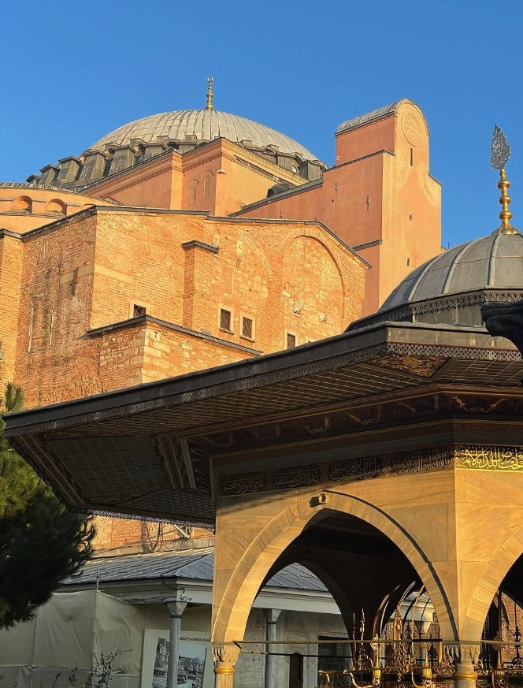
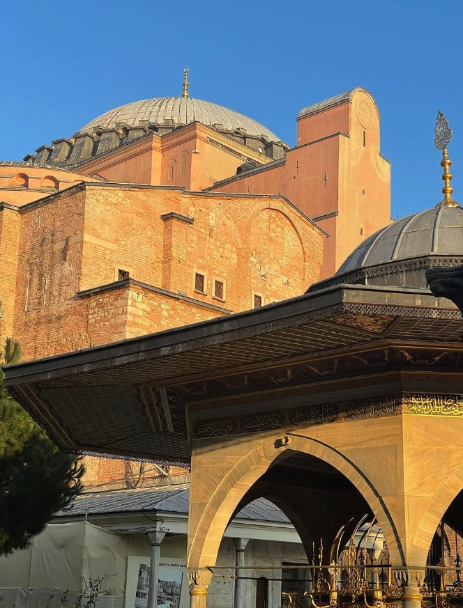

My background
My name is Daniela Gonzalez Roman. I studied at NYU Gallatin, where I focused on Cultures of Diplomacy and
Narratives of Power.
This concentration allowed me to explore and analyze cultural practices through narrative, aiming to foster
more diplomatic and empathetic global relations. I am currently preparing for the LSAT.
Throughout my career, I have worked extensively in journalism, holding positions at CNN, BBC Mundo, Americas
Society, and Latin News.
I grew up in a Cuban household in Miami, Florida, and Spanish is my native language.
Additionally, I was placed in a French program at a young age, which, along with my diverse upbringing,
exposed me to multiple languages.
My interests
My interests include watching and reviewing movies, exploring global histories through primary sources,
with a particular focus on the Middle East and Latin America, and reading autobiographies, especially those of
wartime journalists.
Additionally, I am quite active in meditation and Pilates.
Images
Some photos I took while traveling:
 
